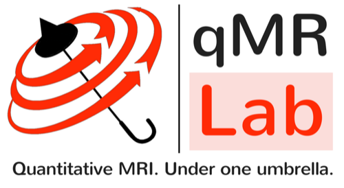

B0 Mapping · Exercise 5-2
Phase unwrapping
In this exercise, we will cover:
- The steps from phase images to a B0 map: echo times, masking and unwrapping
- When unwrapping is needed, and why masking matters
- Unwrapping each echo’s phase, or the phase difference
Exercise 5-2 · (a)
From phase to B0: single-slice dual-echo dataset
Select the settings that produce a B0 map you are satisfied with.
Input
Layers
Cursor
qMRLab mOOC implementation of the phase-unwrapping algorithm based on Jenkinson M. Fast, automated, N-dimensional phase-unwrapping algorithm. Magn Reson Med 2003;49:193–197.
qMRLab mOOC implementation of the phase-unwrapping algorithm based on Jenkinson M. Fast, automated, N-dimensional phase-unwrapping algorithm. Magn Reson Med 2003;49:193–197.
Output
Exercise 5-2 · (b)
From phase to B0: QSM challenge dataset
Select the settings that produce a B0 map you are satisfied with.
Input
Layers
Cursor
qMRLab mOOC implementation of the phase-unwrapping algorithm based on Jenkinson M. Fast, automated, N-dimensional phase-unwrapping algorithm. Magn Reson Med 2003;49:193–197.
qMRLab mOOC implementation of the phase-unwrapping algorithm based on Jenkinson M. Fast, automated, N-dimensional phase-unwrapping algorithm. Magn Reson Med 2003;49:193–197.
Output
Data: Chan K-S, Marques JP, Spincemaille P, Wang Y. QSM consensus example data (Siemens). Zenodo, doi:10.5281/zenodo.7795492, CC BY 4.0; echoes 1 and 2, averaged to 2 mm, every 4th slice.
Exercise 5-2 · Summary
Summary
- You can unwrap either each echo's phase map, then subtract, or the phase difference Δφ = φ2 − φ1.
- Unwrapping might not be necessary: Δφ does not wrap as long as the field offset stays within ±1/(2ΔTE), that is when
ΔTE [s] < 1 / (2 γ̄ ΔB0 [Hz])where ΔB0 is the largest field offset expected.
- Near air–tissue interfaces (sinuses, ear canals), the field can be strong enough that phase wraps are unavoidable, even with a short ΔTE.

To compute B0 maps from your own data, you can use either qMRLab or Shimming Toolbox, open-source tools developed at NeuroPoly.